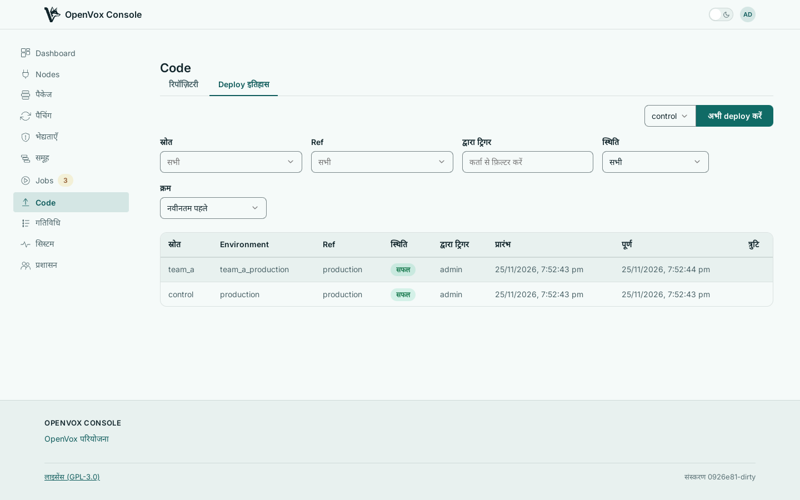

उपयोग
कोड deploy करें
एक या अधिक control रिपॉज़िटरी से Puppet कोड उन Environments में deploy कीजिए जिनसे openvoxserver संकलन करता है।
कंसोल g10k का उपयोग करके control रिपॉज़िटरी से Puppet कोड - git में एक Puppetfile और manifests - उस environments डायरेक्टरी में deploy करता है जिसे openvoxserver पढ़ता है। control रिपॉज़िटरी की हर शाखा एक Environment बनती है।
deploy देखने के लिए code:read चाहिए; deploy शुरू करने के लिए code:deploy।
कोड deploy चालू करें
कोड deploy तब तक बंद रहता है जब तक कंसोल को यह पता न हो कि g10k कहाँ है, क्या deploy करना है, और उसे कहाँ रखना है:
| सेटिंग | यह क्या है |
|---|---|
CONSOLE_G10K_BIN_PATH |
g10k प्रोग्राम। कंसोल की कंटेनर इमेज में यह शामिल है और यह सेटिंग पहले से सेट है |
CONSOLE_CONTROL_REPO_URL |
deploy करने के लिए एक अकेली control रिपॉज़िटरी |
CONSOLE_CODE_SOURCES_PATH |
या, इसके बजाय, कई रिपॉज़िटरी घोषित करने वाली एक फ़ाइल (नीचे देखें) |
CONSOLE_CODE_DIR_PATH |
वह डायरेक्टरी जिससे openvoxserver अपना कोड पढ़ता है; कंसोल उसकी environments डायरेक्टरी में deploy करता है |
CONSOLE_CODE_WEBHOOK_SECRET |
वह secret जिससे git होस्ट के webhooks हस्ताक्षरित होते हैं |
CONSOLE_CONTROL_REPO_URL और CONSOLE_CODE_SOURCES_PATH दोनों एक साथ सेट नहीं किए जा सकते: कंसोल उन्हें मिलाने के बजाय शुरू होने से मना कर देता है।
कंसोल और openvoxserver को वह डायरेक्टरी साझा करनी होगी। एक होस्ट पर पैकेजों के साथ, CONSOLE_CODE_DIR_PATH को /etc/puppetlabs/code पर लगाइए और कंसोल के उपयोगकर्ता को उसकी environments डायरेक्टरी में लिखने दीजिए।
कंटेनर स्टैक के साथ
प्रोडक्शन compose फ़ाइल इनमें से कोई भी सेटिंग कंसोल तक नहीं पहुँचाती, और उसे openvoxserver का code volume भी नहीं देती। दोनों को उसके बगल में एक compose.code.yml में जोड़िए:
services:
console:
environment:
CONSOLE_CONTROL_REPO_URL: ${CONSOLE_CONTROL_REPO_URL:?set the control repository}
CONSOLE_CODE_DIR_PATH: /etc/puppetlabs/code
CONSOLE_CODE_WEBHOOK_SECRET_FILE: /run/secrets/code_webhook_secret
volumes:
- openvoxserver-code:/etc/puppetlabs/code
secrets:
- code_webhook_secret
secrets:
code_webhook_secret:
file: ./secrets/code_webhook_secret
फिर हर कमांड में इसे मुख्य फ़ाइल के बाद दीजिए:
docker compose -f docker-compose.yml -f compose.code.yml up -d console
इस संयोजन को अभी तक इंस्टॉल गाइडों की तरह शुरू से अंत तक परखा नहीं गया है। यदि deploy सफल हो पर openvoxserver को कोड न दिखे, तो जाँचिए कि दोनों कंटेनर /etc/puppetlabs/code/environments के अंतर्गत एक जैसी फ़ाइलें दिखाते हैं।
कई control रिपॉज़िटरी से deploy करें
एक से अधिक रिपॉज़िटरी से deploy करने के लिए, उन्हें एक YAML फ़ाइल में घोषित कीजिए और CONSOLE_CODE_SOURCES_PATH को उस पर लगाइए:
sources:
control:
remote: git@github.com:org/control-repo.git
prefix: false # branch production -> environment production
team_a:
remote: git@github.com:org/team-a-control.git
prefix: true # branch production -> environment team_a_production
private_key: /etc/openvox-console/keys/team_a
webhook_secret_file: /etc/openvox-console/team_a_webhook
- किसी स्रोत के नाम में केवल छोटे अक्षर, अंक और
_हो सकते हैं, क्योंकि वह Environment नामों का हिस्सा बनता है। prefixतय करता है कि किसी स्रोत की शाखाओं से कौन-से Environment नाम बनेंगे:trueउनके आगे स्रोत का नाम जोड़ता है,falseया सेट न होना उन्हें बिना उपसर्ग छोड़ता है, और कोई string उपसर्ग के रूप में उपयोग होती है। दो स्रोतों का उपसर्ग एक जैसा नहीं हो सकता, इसलिए अधिकतम एक ही बिना उपसर्ग रह सकता है; अन्यथा कंसोल शुरू होने से मना कर देता है।- हर स्रोत की अपनी deploy key और अपना webhook secret हो सकता है।
नया उपसर्ग वाला स्रोत सफलतापूर्वक deploy होता है और कुछ नहीं बदलता, जब तक Nodes को उसके नए Environment नामों में वर्गीकृत न किया जाए। Nodes को वहाँ अपने-आप कोई नहीं ले जाता।
Deploy
Code खोलिए। रिपॉज़िटरी टैब हर रिपॉज़िटरी को उसके Environments और अंतिम deploy के साथ सूचीबद्ध करता है; किसी रिपॉज़िटरी पर Deploy उसकी production शाखा को deploy करता है। Deploy इतिहास टैब पर अभी deploy करें डिफ़ॉल्ट रिपॉज़िटरी के लिए यही करता है।
एक ही Environment के deploy कभी एक-दूसरे पर नहीं चढ़ते, चाहे कितने भी कंसोल इंस्टेंस चल रहे हों। हर deploy, उसे शुरू करने वाले के नाम के साथ, deploy इतिहास में और गतिविधि पृष्ठ पर दिखता है।


हर push पर deploy करें
जब भी कोई शाखा push हो तब deploy करने के लिए, अपने git होस्ट पर रिपॉज़िटरी में एक webhook जोड़िए:
- URL:
https://console.example.com/api/v1/code-deploys/webhook, या, कई स्रोतों में से किसी एक के लिए,https://console.example.com/api/v1/code-deploys/webhook/<source name> - Content type: JSON
- Secret: उस स्रोत का webhook secret
- Events: pushes
कंसोल हर delivery के हस्ताक्षर (X-Hub-Signature-256 header) को secret से जाँचता है, और push की गई शाखा को deploy करता है।
रिपॉज़िटरी टैब पढ़ें
हर रिपॉज़िटरी दो Node गिनतियाँ दिखाती है, और उनके बीच का अंतर ही उपयोगी हिस्सा है:
- आवंटित: वे Nodes जिन्हें वर्गीकरण रिपॉज़िटरी के किसी Environment में भेजता है।
- रिपोर्ट कर रहे: वे Nodes जिनके नवीनतम Puppet रन ने इनमें से किसी का उपयोग किया।
आवंटित हों पर कोई रिपोर्ट न कर रहा हो, तो इसका अर्थ है कि कोड deploy हो चुका है पर किसी Node ने उसे अभी चलाया नहीं। रिपोर्ट कर रहे हों पर कोई आवंटित न हो, तो इसका अर्थ है कि Nodes ऐसा कोड चला रहे हैं जिस पर कोई समूह उन्हें नहीं भेजता - आमतौर पर हटाए गए स्रोत से छूटा कोई Environment, या कोई Node जिसके अपने puppet.conf में environment सेट है।
आकार deploy की गई फ़ाइलों का आकार है, डिस्क उपयोग नहीं: g10k Environments के बीच modules साझा करता है, इसलिए रिपॉज़िटरी के आकार एक-दूसरे में मिल जाते हैं।
कॉन्फ़िगरेशन से किसी स्रोत को हटाने से उसके deploy रुक जाते हैं, लेकिन उसके Environments डिस्क पर बने रहते हैं, जहाँ से openvoxserver उनका संकलन करता रहता है। यदि आपका आशय यही था, तो उन्हें स्वयं हटाइए।